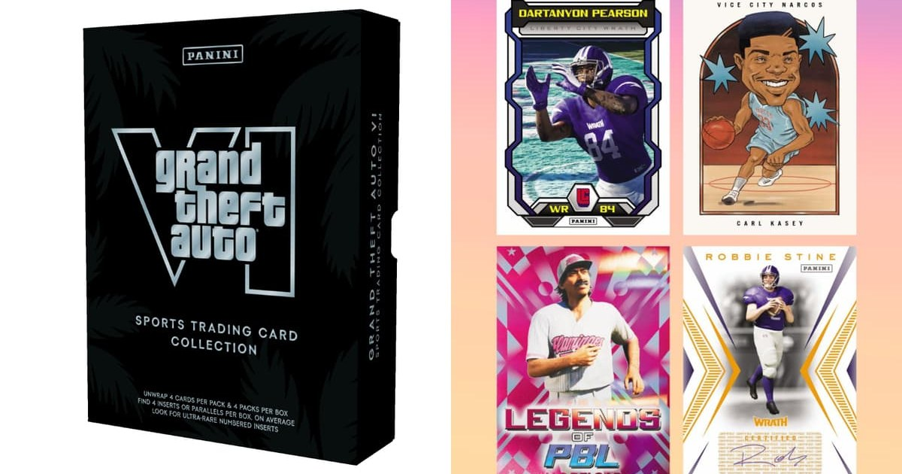

GTA 6's in-game trading cards are becoming real ones — Panini's officially licensed set lands in December
Panini America and Rockstar Games announced the GTAVI: Sports Trading Card Collection on November 24 — real, officially licensed versions of the collectible cards players hunt across Leonida, in hobby boxes this December with numbered parallels down to 1-of-1 Gold.

Disclosure: this post contains affiliate links. I earn a commission on qualifying purchases.
The trading cards in Grand Theft Auto VI are leaving the game. Panini America and Rockstar Games announced on November 24 the GTAVI: Sports Trading Card Collection, the first officially licensed trading card set for Grand Theft Auto, arriving in December 2026. It turns one of the game's in-world collectibles into a real hobby product — the same cards players hunt across Leonida, printed by the biggest name in the business.
The in-game version is already a full collecting system. GTA VI hides hundreds of cards across the state, spread over 18 sets covering fictional sports stars, comic book characters, nightclub dancers and more, and players can sell their duplicates at pawn shops for in-game cash. Panini's set recreates those cards as physical ones, starting with the sports cards — the fictional leagues and athletes of Rockstar's universe, printed like a real sports card release.
What's in the box
Each hobby box holds four packs of four cards, and Panini says the average box breaks down to two Rookies, one Retro, one Illustrated and four Special Silvers. The set is built the way Panini builds its sports lines: team color parallels in Silver, Pink, Teal and Light Blue, plus a numbered chase tier — Legend Bronze cards numbered to 49, Silver cards numbered to 25, and one-of-one Gold parallels at the top of the ladder.
Panini has shown four cards so far, all fictional athletes from the game's leagues. Dartanyon Pearson, a wide receiver wearing 84 for the Liberty City Wrath, leads the reveal, alongside Carl Kasey of the Vice City Narcos, Mario Rugama of the Liberty City Swingers and Maleek Rivers of the Vice City Manatees. The four previews are all sports cards, and the collection may stay in that lane for now — the comic and dancer sets from the game have not been confirmed for physical release.
From Leonida to the hobby shop
This is the latest case of Rockstar pulling something out of its fictional world and making it real. The studio has already built a real-life Grotti Cheetah worth £1 million and teamed up with the Miami Heat on Vice City merchandise. A trading card set is a natural next step: the game itself treats card collecting as a hobby worth satirizing, with its own card brands standing in for Panini's, and now the real company is printing the real thing.
The timing is no accident either. The set was announced five days after GTA VI launched as the biggest entertainment release of all time, and the game's in-world card hunt is one of the things players latched onto immediately — hundreds of cards to find, a pawn-shop economy for the extras, and rare pulls worth chasing. Panini is selling the physical version of a grind players are already doing.
What we don't know yet
Panini has not announced a price, an exact release date inside December, or where the cards will be sold beyond its own channels — no full checklist, no pack odds, and no word on international availability. The December window is the only date on the record. For a release tied to the biggest launch in entertainment history, expect those details to land fast, and expect the one-of-ones to be expensive the moment they surface on the secondary market.
Sources: Panini and Rockstar Games Announce Grand Theft Auto VI Trading Card Collection (PR Newswire) · Rockstar is turning GTA 6's in-game trading cards into real collectibles (Dexerto) · GTA 6 Trading Cards: Release Date, Rarities, Pack Contents (TalkEsport) · Panini Scores 'Grand Theft Auto VI' Trading Card Deal (ToyBook)
Gear up: Razer — mice, keyboards, headsets and laptops.